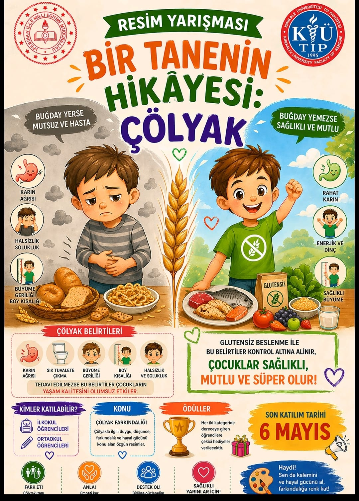

Sağlıklı Bir Yaşam İçin Birlikteyiz
Kırıkkale Çölyak Derneği olarak, çölyak hastalarının haklarını korumak ve glutensiz yaşamı kolaylaştırmak için çalışıyoruz.
Derneğimizi Tanıyın
9 Mayıs Çölyak Günü Resim Yarışması
Duyuru"Buğday Tanesinden Farkındalığa: Çölyak Resim Yarışması"
Yahşihan İlçe Milli Eğitim Müdürlüğü ve Kırıkkale Üniversitesi Tıp Fakültesi iş birliğiyle düzenlenen resim yarışması ile öğrencilerde çölyak hastalığına yönelik farkındalık oluşturulması hedeflenmektedir.
- Katılımcılar: Resmi/Özel Tüm İlkokul ve Ortaokul Öğrencileri
- Son Başvuru: 6 Mayıs 2026 Çarşamba (İlçe Milli Eğitim Müdürlüğü'ne teslim)
- Ödül Töreni: 9 Mayıs 2026
Değerlendirme Ölçütleri:
Kırıkkale Çölyak Derneği olarak, çölyak hastalığı ile yaşayan bireylere ve ailelerine rehberlik etmek, doğru bilgiye erişimlerini sağlamak ve glutensiz yaşamı kolaylaştırmak için buradayız. Aşağıda hastalık, beslenme ve bölgemizdeki kaynaklar hakkında temel bilgilere ulaşabilirsiniz. Çölyak Nedir? • Glutensiz Beslenme • Kırıkkale Rehberi
Çölyak Nedir?
Çölyak hastalığı (Gluten Enteropatisi), genetik yatkınlığı olan bireylerde buğday, arpa, çavdar ve yulafta bulunan gluten proteininin tetiklediği, ince bağırsağın emici yüzeyi olan villusların hasar görmesine yol açan bir otoimmün hastalıktır.
Türkiye'de her 100 kişiden 1'i çölyak hastasıdır, ancak çoğu henüz tanı almamıştır. Kırıkkale'de de birçok birey bu hastalıkla yaşamaktadır. Tek ve etkili tedavi, ömür boyu süren sıkı glutensiz diyettir.
Kırıkkale Nöbetçi Eczaneler
Uzman Görüşleri: Glutensiz Yaşam
Glutensiz Beslenme Rehberi
Kaçınılması Gerekenler
- Buğday (ekmek, makarna, kurabiye, kraker, un, irmik, bulgur, kuskus)
- Arpa (arpa unu, malt, malt özü, malt sirkesi, bira)
- Çavdar (çavdar ekmeği, çavdar unu)
- Yulaf (sadece sertifikalı glutensiz yulaf güvenlidir)
- Çapraz bulaş riski taşıyan tüm gıdalar (ortak kızartma yağı, aynı bıçak/tahta kullanımı)
Güvenle Tüketilebilecekler
- Doğal olarak glutensiz tahıllar: Pirinç, mısır, karabuğday, kinoa, amarant, darı, teff
- Tüm sebze ve meyveler
- Et, tavuk, balık, yumurta, baklagiller (nohut, mercimek, fasulye)
- Süt ve sade yoğurt, peynir (katkısız)
- Glutensiz sertifikalı ürünler (markalar: Schär, Dr. Schär, Migros Glutensiz, vb.)
📍 Kırıkkale'de glutensiz ürün bulabileceğiniz işletmelerin listesi ve haritası için Yerel Rehber sayfamızı ziyaret edebilirsiniz.
Her zaman etiket okuyun ve "glutensiz" sertifikasına sahip ürünleri tercih edin.
Derneğimiz Hakkında Yerel Medya Haberleri
Haber bulunamadı
Haber listesi boş veya erişilemez durumda.
Öne Çıkan Sayfalar
Aramıza Katılın
Çölyak hastalığı hakkında daha fazla bilgi edinmek ve topluluğumuzun bir parçası olmak için WhatsApp Grubumuza katılın, ayrıca bağışlarınızla bize destek olabilirsiniz.